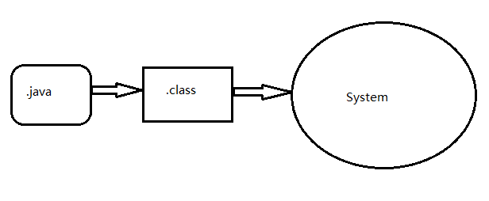
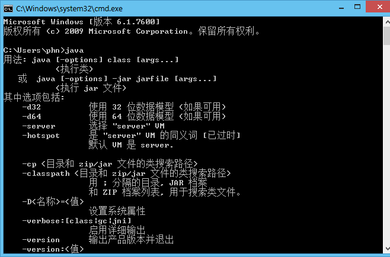
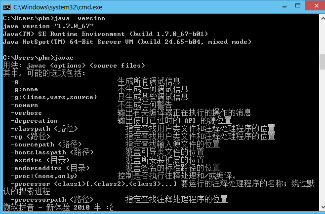

Java核心优势:跨平台
一个Java程序运行需要JRE（Java运行时环境）
需要开发Java则需要JDK
JavaEE Java企业版开发，服务器级别的开发
JavaSE Java标准版开发，桌面软件级别的开发
JavaME Java微型版开发，老诺基亚等系统中开启会有Java图标的软件开发
JVM是一种规范，就是一个虚拟的用于执行bytecodes字节码的计算机

Java环境变量的配置：
JAVA_HOME:jdk安装路径C:\Program Files\Java\jdk1.7.0_67
path:%JAVA_HOME%\bin
jdk5.0之前需要配置classpath，jdk5.0之后就不需要了，它会自动的去找类文件
配置完成后打开cmd然后输入以下命令测试
java
javac
java -version

